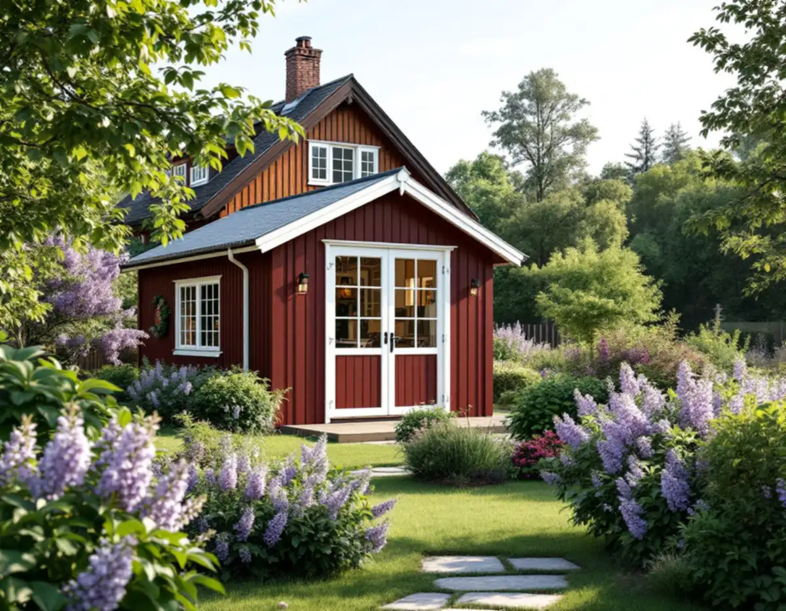
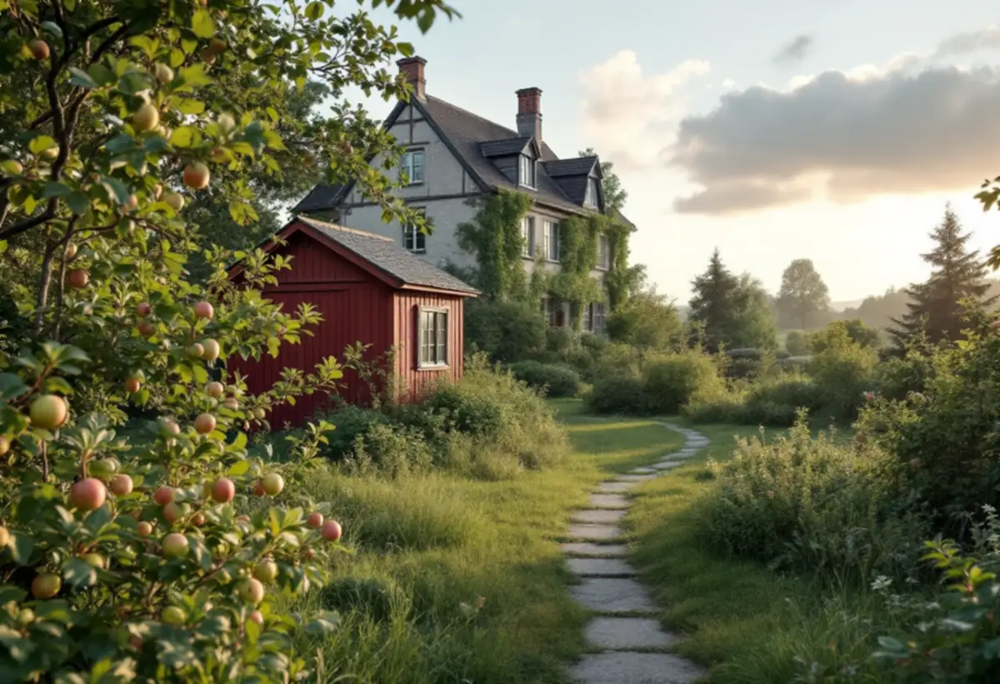
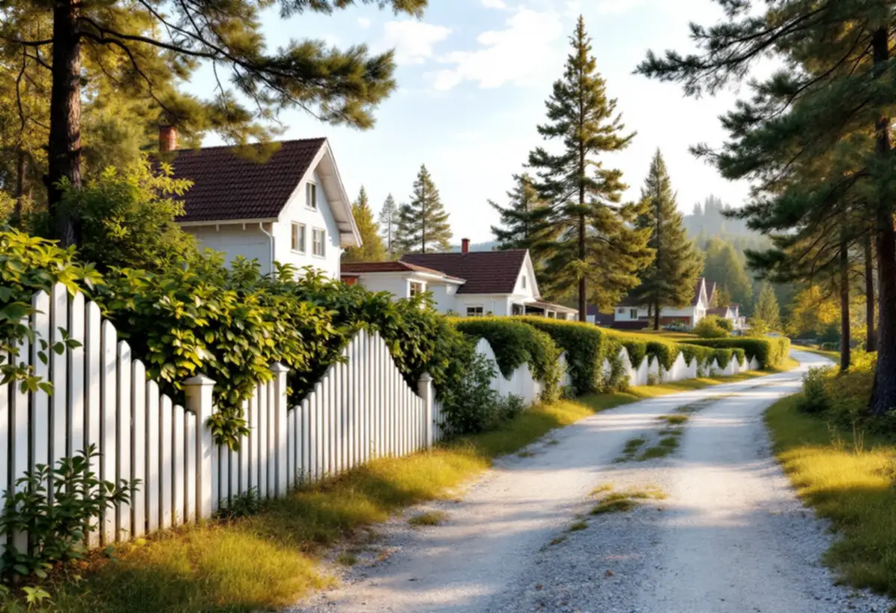

Läget
Duvbo, kulturvärden och detaljplan kontrolleras först.
I Sundbyberg går skiljelinjen vid Duvbo. Där går det inte att bygga ett lovfritt komplementbostadshus, medan villatomter på andra håll i staden följer de vanliga reglerna. Geal Entreprenad AB reder ut vad som gäller för din tomt och bygger huset nyckelfärdigt.

Sundbybergs stad skriver att bygglovslättnaden för komplementbostadshus inte gäller för kulturhistoriskt värdefulla byggnader, och att det i riksintresset Duvbo inte är möjligt att uppföra ett bygglovsbefriat komplementbostadshus. Sedan den 1 december 2025 får du inte heller uppföra, flytta eller bygga till en friggebod i Duvbo. River du en friggebod kan du inte bygga den på nytt.
Planerar du en nybyggnad i Duvbo erbjuder staden ett kostnadsfritt konsultationsmöte med någon av stadens arkitekter. Där får du veta vad som är möjligt på fastigheten och vilka krav som kan ställas på gestaltning och utformning. Det är dit vi råder dig att gå först, innan några ritningar beställs.

Stadens miljöprogram för Duvbo beskriver hur de gamla uthusen står inne på tomterna, ofta dolda av växtlighet, och hur husen ligger på tomtens högsta punkt med breda förgårdar mot gatan. Programmet räknar den glesa bebyggelsen och den karaktäristiska förgårdsmarken till områdets kulturmiljövärden, och ber fastighetsägare lägga tillbyggnader och uthus så att öppenheten bevaras och gatubilden förändras så lite som möjligt.
Om staden efter en prövning kan godta ett nytt gårdshus på en tomt i Duvbo blir det alltså ett hus långt in på tomten, lågt och enkelt, i trä och med ett tak som passar villans. Vi ritar förslaget efter programmet och tar med det till konsultationsmötet.
Utanför Duvbo kan ett komplementbostadshus vara lovfritt om det är högst 30,0 kvadratmeter byggnadsarea, mindre än huset det kompletterar och högst 4,0 meter i nock. Varje tomt inom detaljplan har en sammanlagd pott på 45 kvadratmeter för sådana byggnader, och staden påpekar att tidigare attefallshus, friggebodar och lovfria skärmtak räknas in.
Huset får strida mot detaljplanen, utom där planen har bestämmelser om skydd mot störningar. Vill du ha ett bindande besked kan du söka frivilligt bygglov – staden skriver att det kostar lika mycket som ett vanligt bygglov. Installeras vatten, avlopp, ventilation eller eldstad krävs anmälan och startbesked innan bygget börjar.
Huset ska stå minst 4,5 meter från gränsen mot granne, samfällighet eller allmän plats, som gatu- och parkmark. Står det närmare behövs skriftligt medgivande. För allmän platsmark är det oftast staden som är huvudman, och i Sundbyberg skickas förfrågan skriftligt till kommunstyrelsen.
Grannemedgivandet ska vara underskrivet av berörda grannar, och avståndet till gränsen ska vara inritat på situationsplanen. Huset ska också stå minst 30 meter från ett järnvägsspår om inte infrastrukturförvaltaren har gett sitt medgivande. Måtten finns samlade i reglerna för attefallshus, och om du hellre bygger ihop med villan finns tillbyggnad i Sundbyberg.

Duvbo, kulturvärden och detaljplan kontrolleras först.
Vi mäter tomten, befintliga byggnader och avstånden.
Grannar och, vid allmän plats, kommunstyrelsen.
Bygglov, frivilligt bygglov eller anmälan för installationerna.
Grund, stomme, tak och installationer fram till nyckelfärdigt.
Huset tas i bruk när slutbeskedet har kommit.
Skatteverket skriver att det inte går att få rotavdrag för att bygga en helt ny bostad, och inte heller för ett nytt hus, en friggebod, ett garage eller en liknande fristående byggnad. Ett komplementbostadshus står fritt på tomten, så kostnadsförslaget för huset räknas utan avdrag.
Om huset kräver bygglov, storlek och planlösning, kök och badrum, grundläggning, ledningsdragning och hur material kan bäras in på tomten. Efter ett gratis platsbesök får du ett skriftligt kostnadsförslag.
Komplementbostadshus på tomten.
Attefallshus →Takbyte, takbesiktning och plåtarbeten.
Takläggare i Sundbyberg →Rött lertegel och synliga taktassar i Duvbo.
Takrenovering i Sundbyberg →Ventilationen, OVK och Duvbo.
Badrumsrenovering i Sundbyberg →Nytt hus, träd och regler i Duvbo.
Byggföretag i Sundbyberg →Puts och kulör i stadskärnan.
Fasadmålning i Sundbyberg →Panel och puts på Duvbos villor.
Fasadrenovering i Sundbyberg →Duvbo, flerbostadshusen och lovet.
Fönsterbyte i Sundbyberg →Egnahemsvillornas fönster i Duvbo.
Fönsterrenovering i Sundbyberg →Trägolv i äldre villor och nya golv.
Golvläggare i Sundbyberg →Ta bort färg och fernissa från gamla golv.
Golvslipning i Sundbyberg →Duvbos villor och stadens lägenhetskök.
Köksrenovering i Sundbyberg →Lamellhus, kulörbyte och bostadsrätt.
Målare i Sundbyberg →Duvbos tak, rännor och lov.
Plåtslagare i Sundbyberg →Altan, pergola och staket enligt stadens guide.
Snickare i Sundbyberg →Container, ställning och grannar.
Takbyte i Sundbyberg →Ny tapet i äldre lägenheter.
Tapetsering i Sundbyberg →Duvbo, träden och riktlinjerna.
Tillbyggnad i Sundbyberg →Duvbos villor, kaminer och etablering.
Totalrenovering i Sundbyberg →